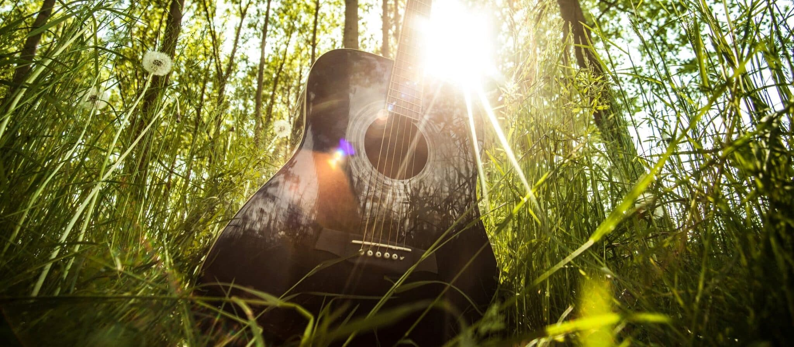

TAKE ACTION

Environmental Victories
Explore five decades of legislative breakthroughs, protected bio-corridors, plastic bans, and civic triumphs achieved by our international coalition.
OFFICIAL DISPATCH
Mobilizing Frontline Environmental Leadership
THE ORIGINS OF EARTH DAY In the decades leading up to the first, Americans were consuming vast amounts of leaded gas through massive and inefficient automobiles. Industry belched out smoke and sludge with little fear of the consequences from either the law or bad press. Air pollution was commonly accepted as the smell of prosperity. Until this point, mainstream America remained largely oblivious to environmental concerns and how a polluted environment threatens human health. However, the stage was set for change with the publication of Rachel Carson’s New York Times bestseller Silent Spring in 1962. The book represented a watershed moment, selling more than 500,000 copies in 24 countries as it raised public awareness and concern for living organisms, the environment and the inextricable links between pollution and public health. More on Gaylord Nelson and Denis Hayes THE IDEA FOR THE FIRST EARTH DAY Senator Gaylord Nelson, the junior senator from Wisconsin, had long been concerned about the deteriorating environment in the United States. Then in January 1969, he and many others witnessed the ravages of a massive oil spill in Santa Barbara, California. Inspired by the student anti-war movement, Senator Nelson wanted to infuse the energy of student anti-war protests with an emerging public consciousness about air and water pollution. Senator Nelson announced the idea for a teach-in on college campuses to the national media, and persuaded Pete McCloskey, a conservation-minded Republican Congressman, to serve as his co-chair. Senator Gaylord Nelson recruited Denis Hayes, a young activist, to organize the campus teach-ins and to scale the idea to a broader public, and they choose April 22, a weekday falling between Spring Break and Final Exams, to maximize the greatest student participation. Recognizing its potential to inspire all Americans, Hayes built a national staff of 85 to promote events across the land and the effort soon broadened to include a wide range of organizations, faith groups, and others. They changed the name to Earth Day, which immediately sparked national media attention, and caught on across the country. Earth Day inspired 20 million Americans — at the time, 10% of the total population of the United States — to take to the streets, parks and auditoriums to demonstrate against the impacts of 150 years of industrial development which had left a growing legacy of serious human health impacts. Groups that had been fighting individually against oil spills, polluting factories and power plants, raw sewage, toxic dumps, pesticides, freeways, the loss of wilderness and the extinction of wildlife united on Earth Day around these shared common values. Earth Day 1970 achieved a rare political alignment, enlisting support from Republicans and Democrats, rich and poor, urban dwellers and farmers, business and labor leaders. By the end of 1970, the first Earth Day led to the creation of the United States Environmental Protection Agency and the passage of other first-of-their-kind environmental laws, including the National Environmental Education Act, the Occupational Safety and Health Act, and the Clean Air Act. Two years later congress passed the Clean Water Act. TIMELINE 1970 The dawn of the modern environmental movement. Earth Day 1970 became, and continues to be to this day, the largest secular day of protest in the world. 1980 The principal Earth Day event in 1980, held in Washington. D.C. across from the White House, capped a decade of substantial US environmental legislation, including the Endangered Species Act, Marine Mammal Protection Act, Superfund, Toxics Substances Control Act, the Resource Conservation and Recovery Act, and of course the Clean Air Act and Clean Water Act. It had seen the creation of the Environmental Protection Agency and the banning of DDT and of lead in gasoline. Earth Day continued to expand internationally during the 80’s, as did international policy initiatives. 1990 As 1990 approached, a group of environmental leaders approached Denis Hayes to once again organize another major campaign for the planet. This time, Earth Day went truly global, mobilizing 200 million people in 141 countries and lifting environmental issues onto the world stage. Earth Day 1990 gave a huge boost to recycling efforts worldwide and helped pave the way for the 1992 United Nations Earth Summit in Rio de Janeiro. It also prompted President Bill Clinton to award Senator Nelson the Presidential Medal of Freedom — the highest honor given to civilians in the United States — for his role as Earth Day founder. 2000 As the millennium approached, Hayes agreed to spearhead another campaign, this time focusing on global warming and pushing for clean energy. Earth Day 2000 combined the big-picture feistiness of the first Earth Day with the international grassroots activism of Earth Day 1990. Earth Day had the internet to help link activists around the world. By the time April 22 came around, 5,000 environmental groups worldwide were on board, reaching out to hundreds of millions of people in a record 184 countries. Events varied: A talking drum chain traveled from village to village in Gabon, Africa, for example, while groups of thousands and more gathered worldwide for various events, rallies, and marches. 2010 Nearly one billion people around the world took action for the 40th anniversary of Earth Day. An estimated 20,000 partners took action on climate change and other environmental issues through climate rallies, Billion Acts of Green™, and by engaging civil leaders in plans to build a green economy, connected through the online action center at EARTHDAY.ORG. Through the Global Day of Conversation, more than 200 elected officials in more than 39 countries took part in active dialogues with their constituents about their efforts to create sustainable green economies and reduce their carbon footprints. 2016 Signing of the Paris Agreement. It was no accident that the United Nations selected Earth Day to sign the most significant climate accord in the history of the climate and environmental movement. On Earth Day 2016, world leaders from 175 nations broke a record by doing exactly that. 2020 Earth Day 2020 was the 50th Anniversary of Earth Day. Activations included activities such as the Great Global CleanUp, Citizen Science, Advocacy, Education, and Street Art. The year's theme for Earth Day 2020 was “Climate Action." Due to the COVID-19 pandemic, many of the planned activities were moved online. Notably, EARTHDAY.ORG and a coalition of youth activists co-hosted Earth Day Live, a three-day livestream commemorating the 50th anniversary of Earth Day in the United States. In total, over 1 billion people worldwide participated in Earth Day actions, and 100 million observed the 50th anniversary in what is being referred to as the largest online mass mobilization in history. Earth Day Today EARTHDAY.ORG continues to build upon the work and legacy of its founders. Joining with thousands of partners around the world, the organization continues to build a historic movement as citizens of the world rise up in a united call for the creativity, innovation, ambition, and bravery that we need to meet our climate crisis and seize the enormous opportunities of a zero-carbon future. Read The Full History Of EARTHDAY Earth Day Archive READ ABOUT PAST EARTH DAY EVENTS AND IMPACTS Join The Movement!
Tax ID - 13-3798288 1616 P street, NW Suite 340 Washington, DC 20036 +1 (202) 518- 0044 [email protected]
Global Environmental Impact
EARTHDAY.ORG works across 192 countries with 150,000 partners to protect ecosystems, educate students, and advance decisive environmental policies.
EARTHDAY.ORG works across 192 countries with 150,000 partners to protect ecosystems, educate students, and advance decisive environmental policies.